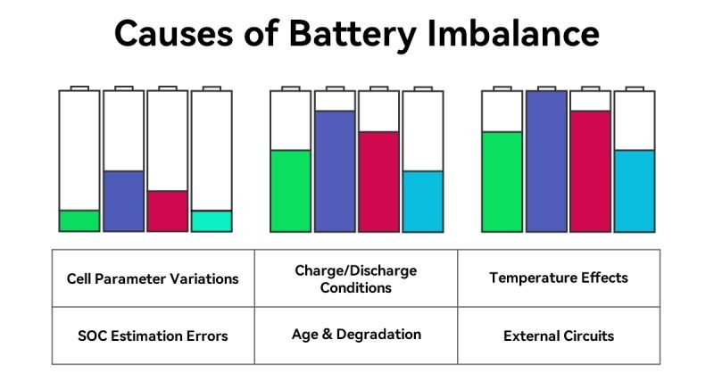
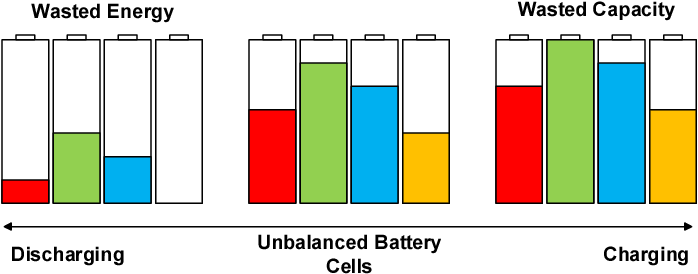
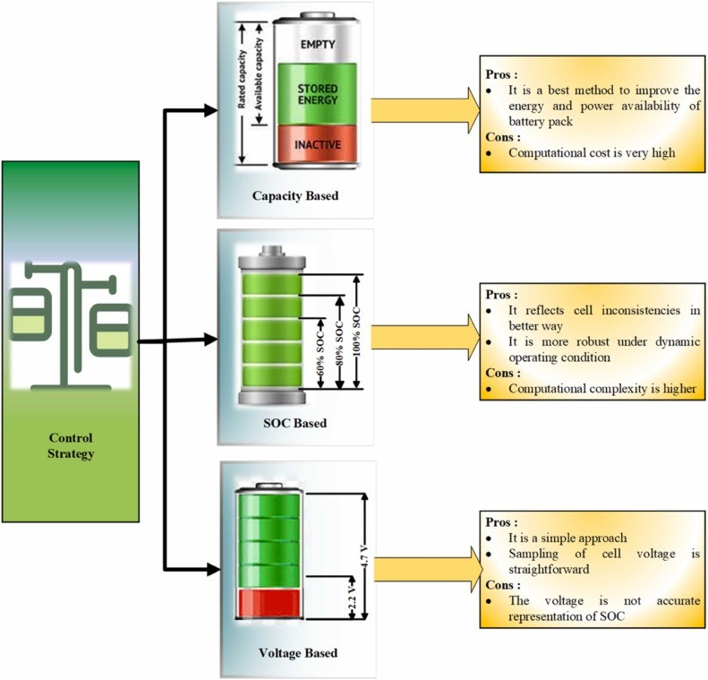
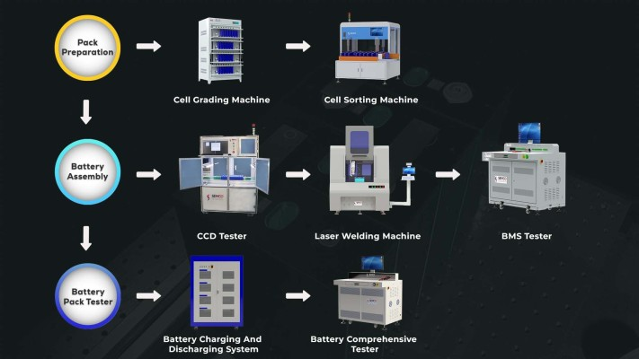

Lithium-ion batteries are the workhorses of our modern world, powering everything from smartphones and laptops to electric vehicles and grid-scale energy storage. But did you know that the performance and longevity of these batteries heavily rely on a critical process called cell matching?
What is Cell Matching?
Lithium-ion batteries are often composed of multiple individual cells connected in series and/or parallel to achieve the desired voltage and capacity. Cell matching involves carefully selecting and grouping cells with similar characteristics, such as:
- Capacity: The amount of charge a cell can store.
- Voltage: The electrical potential of a cell.
- Internal Resistance: The opposition to the flow of current within a cell.
- Self-Discharge Rate: The rate at which a cell loses charge over time.
Why is Cell Matching Important?
When cells with mismatched characteristics are combined in a battery pack, several problems can arise:
- Reduced Performance: The weakest cell in a pack can limit the overall performance, reducing the battery's capacity and power output.
- Uneven Aging: Mismatched cells age at different rates, leading to imbalances in the pack and premature failure of weaker cells.
- Safety Concerns: In extreme cases, mismatched cells can lead to thermal runaway, a dangerous condition that can cause overheating, fire, or even explosion.

Consequences of Cell Mismatch
- Capacity Loss: When cells are mismatched, batteries show large capacity losses over cycles. The greatest decrease occurs with the pack exhibiting a high capacity mismatch.
- Cell Imbalance: Cells that develop high self-discharge will lead to imbalance and subsequent failure. Low-quality cells may also be prone to unequal aging.
- Potential Failure: Cell mismatch is a common cause of failure in industrial batteries.

Benefits of Cell Matching
- Enhanced Performance: High-quality lithium-ion cells have uniform capacity and low self-discharge rates when new. Grade A cells have low and congruent internal resistance, which is crucial for easier cell balancing and assured longevity, especially under high stress. Consistent storage capacity amongst cells is a critical performance metric.
- Increased Lifespan: Cell matching leads to a more balanced charge and discharge process across the battery pack, minimizing the risk of individual cell deviation and failures, thus maximizing the overall lifespan of the battery. There is a strong correlation between cell balance and longevity.
- Improved Reliability: Ensuring consistent lithium-ion battery performance is essential for extending battery life and reliability. Lithium-ion battery stability techniques focus on maintaining battery performance over time, reducing wear, and enhancing battery quality control techniques throughout production.
- Easier Cell Balancing: Cell matching with low and congruent internal resistance is crucial for easier cell balancing, which is important for the high stress of charge and discharge cycles in ESS applications.

How is Cell Matching Done?
- Cell Selection: Choosing cells with similar performance metrics like voltage, capacity, and internal resistance promotes better pack balance and consistency. It's best to use cells from the same production batch or with similar manufacturing parameters to minimize performance variations.
- Cell Sorting: The data collected from the testing process is analyzed to identify cells with similar characteristics. Cells are then sorted with cell sorting machines into groups or "bins" based on their measured parameters.
- Matching and Grouping: The specific criteria for matching cells will vary depending on the application and the desired performance characteristics of the battery pack. Cells within a group should have very similar characteristics. The tighter the tolerances, the better the matching.
- Cell Balancing: Before assembling the cells into a battery pack, it's often necessary to ensure that all cells have the same state of charge. This is known as "balancing."
- Battery Pack Assembly: Once the cells are matched and balanced, they can be assembled into a battery pack in the desired configuration (series and/or parallel).

The Role of Battery Management Systems (BMS)
All lithium-ion cells require a protection circuit that assures that serially connected cells do not exceed a certain voltage on charge and disconnect when the weakest cell drops to a certain voltage or lower. The discharge disconnect prevents the stronger cells from pushing the depleted cell into reverse polarity. The BMS also safeguards the battery from excessive load current.
Conclusion
Cell matching is a critical process in the production and maintenance of lithium-ion batteries. By matching cells with similar characteristics, manufacturers can optimize the performance, safety, and longevity of these batteries.